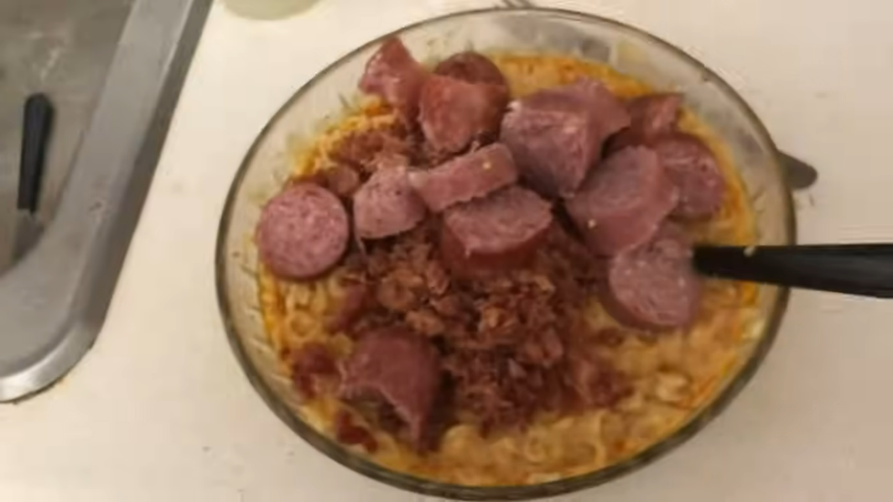

Sardine and Spam Noodles :3

Description
Most of what you need to eat this garbage should be at your local food pantry. Don't let your trolls win and make
yourself this slop right away!
Ingredients
- Top Ramen Chicken Noodles
- Red Hot Buffalo Ranch
- Pork King Bacon Seasoning
- Glass Kicking Seasoning
- 2 cups olive oil
- Bacon Grease in a Tub
- Country Crock Spread
- 2 Fresh Bottles of Water
- Spam
- Summer Sausages
- Bacon Bits
- Sardines
- Sharp Cheddar Cheese
- Velveeta Cheese Sauce
Steps
- Add two packets of ramen noodles chicken soup into a bowl and add the packets
- Add the odd mixture of seasoning mentioned in the ingredients, and two cups of extra virgin (hehe) olive oil to bowl
- Some genius put bacon grease in a Country Crock like tub! Add like 3 scoops of that shit.r you got.
- If you live in an area with untreated and lead-ridden water like Casper, Wyoming, pour two bottles of fresh water into the mixture, else whateve
- Add 3 scoops or more of Country Crock spread to bring on the diabeetus
- Microwave your slop in the microwave for 12 minutes so it completely rubberizes.
- Now this is where it gets good, YouTube! Add some of that country crock spread to a pan on medium heat.
- Cut up some spam in a bowl and add it to the pan.
- Get that sum of bitch cooking!
- Use a spoon to stir the contents of the bowl in the microwave, make sure they’re all dent yay
- Boil the spam alive in the greasy pan until they’re scorched
- Prepare the summer sausauges.
- Drain the broth from the bowl, make sure you angle it at such a way that the contents run down the side of the bowl and go on the rim of the si
- Add Kraft sweet barbeque sauce.
- Add Frank’s red hot buffalo wing sauce. Maybe a little bit more.
- Add Chick fila sauce
- Add Mustard
- Scoop of grease and butter on top of your abomination for good measure.
- Stir it all around and add some real chocolate bacon bits(put the whole god damn bag in there)
- Clumsily manuever your camera and go “son of a bitch!”
- Cut sausages and add them to the bowl, use a fork so you don’t cut your regarded fingers
- Add irradiated spam
- Stir and add the optional sardines
- Crush up some ritz crackers to add some crust on top
- Add Velveeta cheese sauce and scoop it into the middle
- For garnish, add sharp cheddar cheese
- Microwave for 1:30, watching it like a hawk until it has a perfect sheen of cheese on top, scooping anything off the side of the bowl back in.
- Enjoy!